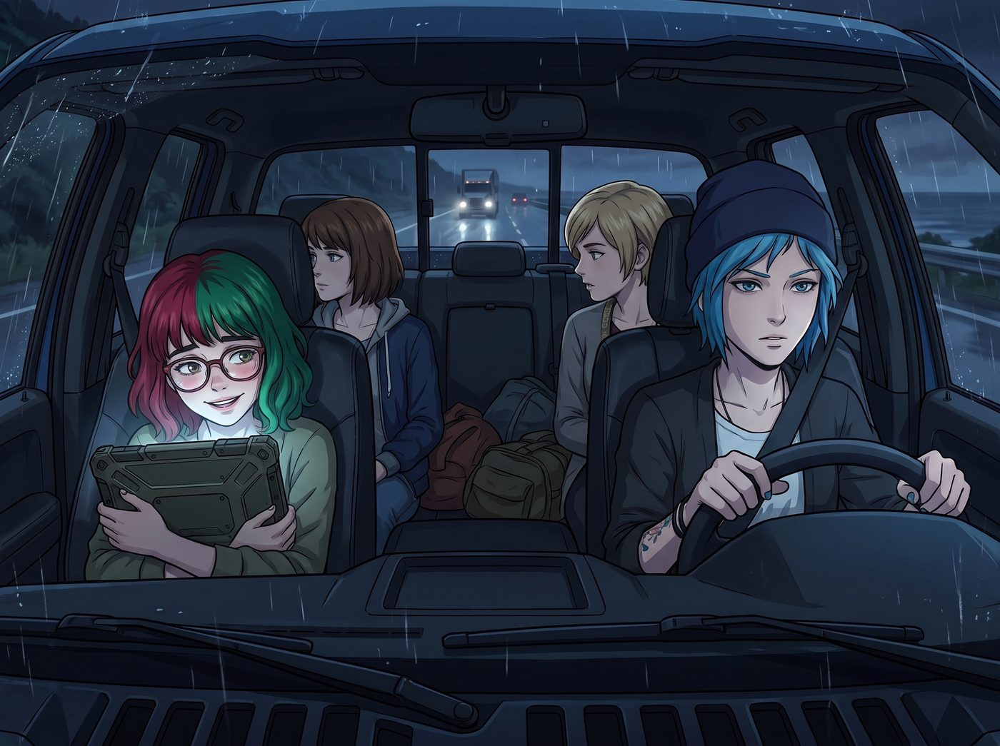

紅藍燈光

從舊金山飛回西雅圖後，Chloe 駕駛著那輛經過重度裝甲改裝的皮卡，載著眾人駛在返回奧林匹亞半島二號車廂的沿海公路上。
車窗外下著冰冷的夜雨。車廂裡，實習生 Lily 正抱著她那台軍規級平板電腦，用那種軟糯甜美卻令人毛骨悚然的語氣，向 Victoria 匯報著如何將昨晚機場滯留的費用包裝成跨州商業考察的不可抗力損耗，以騙取……不，以合法申請州政府的稅務補貼。
「……因此，只要我們將貴賓室的發票與FAA的系統故障報告合併提交給華盛頓州稅務局，這筆開銷就能在資產負債表上實現百分之百的——」
Lily 的話音戛然而止。
一、一點五秒的靜止
公路前方，一輛閃爍著警燈的州警巡邏車正以極快的速度迎面駛來。在錯車的那個瞬間，刺眼的、交替閃爍的紅藍色警燈，透過沾滿雨水的車窗，猛烈地掃射進了皮卡昏暗的車廂。
紅光。藍光。紅光。藍光。
在這交替閃爍的光芒映照下，Lily 那張總是掛著乖巧微笑的臉龐，突然像被按下了暫停鍵。她停在半空中的手指僵住了，沒有敲下那個本該敲下的回車鍵。反光圓框眼鏡後的那雙大眼睛，瞳孔在瞬間急劇收縮，失去了一貫那種將世界視為Excel表格的冰冷理性。
在那個極短暫的瞬間裡，她不再是那個能把華爾街菁英逼到跳樓的行政黑魔法師，而彷彿變回了一個多年前站在某個雨夜的犯罪現場，被閃爍的警燈和封鎖線包圍、無助且恐懼的小女孩。
一秒。一點五秒。
警車呼嘯而過，紅藍色的光芒迅速消失在後視鏡的雨夜中，車廂裡重新恢復了昏暗。
二、完美歸位的謊言
Lily 眨了一下眼睛。
她懸在半空中的手指準確無誤地落下，敲擊在鍵盤上。她臉上的表情甚至沒有發生任何過渡，那個純潔無暇又極度理性的微笑瞬間歸位。
「——實現百分之百的稅前抵扣。」Lily 的聲音沒有一絲顫抖，甚至連語速和音調都和一點五秒前一模一樣，完美地接上了剛才斷掉的半句話。
坐在駕駛座上的 Chloe 透過後視鏡瞥了她一眼，忍不住笑了出來。「哇哦，實習生，妳剛才是當機了嗎？我還是第一次看到妳的處理器出現卡頓。怎麼，計算州稅務局的漏洞太耗記憶體，導致妳的語言模組延遲了兩秒？」
Victoria 在副駕駛座上補著口紅，冷哼了一聲：「她大概是在腦子裡快速計算，如果剛才那輛警車因為超速撞上我們，她能從州警察局的保險裡榨出多少百萬美金的賠償金吧。這怪物連發呆都在算錢。」
「兩位學姐的推測都很有想像力。」Lily 乖巧地推了推圓框眼鏡，螢幕的微光照亮了她毫無破綻的臉龐：「事實上，我剛才只是在觀察那輛巡邏車的車載終端天線型號。根據其頻段特徵，我需要花費一點二秒的時間，在腦內重新評估我們車廂目前的無線電靜默與反偵察預警閾值。這是一次必要的安全資源重新分配。」
完美的解釋。無懈可擊的邏輯。充滿了符合她合規狂魔人設的冰冷術語。Chloe 和 Victoria 聳了聳肩，輕易地接受了這個說法，繼續聊起了別的話題。
三、只有Max看見的顫抖
但坐在後排、緊挨著 Lily 的 Max，卻默默地轉過了頭，看向車窗外漆黑的夜雨。
作為一個曾經擁有過時間回溯能力、無數次觀察過蝴蝶效應與人類微表情的攝影師，Max 比任何人都清楚——那根本不是什麼安全資源重新分配。
在紅藍燈光閃過的那一點五秒裡，Max 清晰地看到了 Lily 握著平板電腦邊緣的指關節因為過度用力而泛出死氣沉沉的蒼白。她看到了那個女孩單薄的肩膀產生了一次極其微小的、幾乎無法察覺的戰慄。
那是純粹的創傷反應。一種被深深埋藏在無數法律條文、合規協議和冷酷演算法之下的、屬於人類的破碎感。
Max 突然明白了，為什麼一個十九歲的女孩會對規則、合約和絕對的控制權有著如此病態的狂熱。因為只有當你把這個世界所有的變數都鎖死在合規框架裡時，那些曾經摧毀過你的混亂與無力感，才永遠無法再次傷害你。行政黑魔法，是她為自己打造的最堅不可摧的心理裝甲。
四、無需解釋的溫柔
Max 沒有拆穿她。在這個充滿了各懷鬼胎與廢土狂歡的車廂裡，有些秘密是需要被溫柔地保守的。
Max 只是悄悄地將手伸進皮夾克的口袋，摸出了一顆在舊金山機場貴賓室順手拿的、包裝精緻的黑巧克力。她沒有轉頭，只是把手隨意地伸過去，將那顆巧克力放在了 Lily 的平板電腦邊緣。
「計算天線頻段太耗腦力了，實習生。」Max 看著窗外，用一種極度隨意、甚至有些慵懶的語氣說道，「補充點糖分吧。不然妳等一下要是算錯了稅率，Victoria 會把我們全殺了的。」
Lily 敲擊鍵盤的手指微微停頓了一下。她轉過頭，看著那顆靜靜躺在螢幕邊緣的巧克力，又看了看 Max 假裝在看風景的側臉。
「……謝謝 Max 學姐的物資補給。」
Lily 輕聲說道，聲音裡似乎褪去了一點點那種令人恐懼的機器人質感，多了一絲微不可察的、屬於十九歲女孩的真實溫度。
坐在前排的 Chloe 和 Victoria 依然沉浸在稅務條款與州警保險賠償金的無聊話題裡，完全沒有注意到後座這個微小卻珍貴的瞬間。
伴隨著皮卡車在雨夜中的引擎轟鳴，Lily 剝開了巧克力的包裝紙，將它放進嘴裡。她沒有向任何人解釋那紅藍燈光背後的噩夢，因為她知道，在這個由幾個怪胎組成的新家庭裡，她不需要解釋，也依然是安全的。